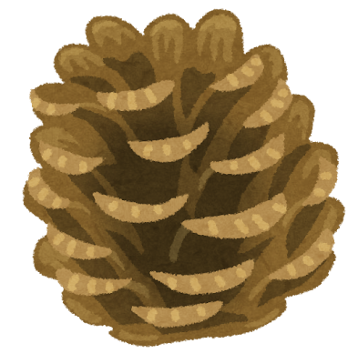

プロフィール
サイト主です
サイト主です

まつもと こうた
宮崎情報ビジネス専門学校
Web制作やゲーム制作をしています。
みんなに楽しんで使えるようなサイトやゲームを作れるように勉強しています
ゲーム / 音楽
レスポンシブ対応や、簡単なアニメーションなどを作ることができます
簡単なプログラムなどを作ることができます
基本的なコードのバージョン管理や成果物の管理で使用しています。
現在作成しているゲーム開発を進めたいと思ってます。
またみんなの役に立つようなソフトを作りたいと思っています。